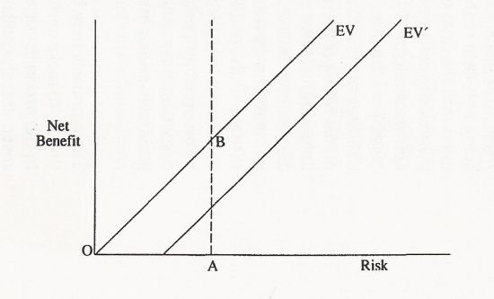

by Robin Johnson(1)
New legislation seeks to control the import and use of risky products that are liable to damage human health or the environment. There is a considerable debate about who the gatekeeper will be and the rules by which the gatekeeper will operate. The aim of such rules should be to seek what is best in the national interest. One way to define the national interest would be to build up a cost-benefit system of evaluation for imports and use of relevant products. At present, no such procedures exist but they could be developed from the ideas set out in this paper.
There are currently two pieces of legislation before the House concerning the regulation of deleterious or hazardous products entering trade or used in production processes - The Hazardous Substances and New Organisms Bill ("HASNO") and the Agricultural Compounds Bill (AC).(2) These replace existing legislation following the passing of the Resource Management Act 1991 ("RMA"). Among other things, the legislation introduces new agencies to manage the introduction of new products and new criteria to choose among alternative products or to reject them from import and use. The legislation attempts to guide the new agencies in their decisions by setting out criteria for admitting entry and processes which should be followed in making decisions. At the time of writing, HASNO has just passed through Parliament but the Animal Compounds legislation has not been given its final reading so some arrangements may yet vary from those discussed here.
The aim of the Hazardous Substances and New Organisms law reform is to provide a comprehensive and consistent approach to the management of all hazardous substances and new organisms. The aim of the Agricultural Compounds Bill is to reform the law relating to the management of risks from agricultural compounds such as animal remedies, fertilisers, stock foods, and pesticides. The risks controlled by the AC Bill are the risks to trade in primary produce, risks to animal welfare, risks to agricultural security, and the need to ensure that use of agricultural compounds does not result in breaches of domestic food standards.
There is a long history of regulation in the area of these products with the exception of genetically modified organisms. Such regulation was based on the principle that import and use was permissible if the deleterious effects on society could be managed safely. Regulations could specify conditions of use, maximum levels of specific substances, purity standards (fertilisers), containment, sanitization treatment and so on. With the passage of the RMA, emphasis changed to more specific attention to the effects of import and use of such products, hence the need to update and consolidate the legislation. Part XIII of the RMA provided for the establishment of a Hazards Control Commission; this has never been established - ERMA will take its place.
With new legislation, there is an opportunity to clarify the criteria that need to be taken into account by the relevant agencies and the general objectives of such regulations. Both Bills started out with defining that the purpose of the legislation was to maximize the net national benefit from the use of agricultural compounds, or to manage or prevent harmful effects of hazardous substances so as to enable the net national benefit to be achieved. Net national benefit implies a wide range of social and economic factors should be taken into account in making a decision for importation and use. HASNO provides that ERMA is to assess all new hazardous substances and new organisms for their suitability for importation, manufacture, development, or release from containment, and approve them if the beneficial effects outweigh the adverse effects, or decline the application in any other case. The AC Bill states the benefit is to be achieved by managing the risks associated with the use of agricultural compounds (risks to trade, animal welfare, and agricultural security) by ensuring that the use of agricultural compounds does not breach domestic food standards and enables the provision of sufficient consumer information.
In addition to these requirements, the Bills need to recognize the provisions of the WTO Agreement on Sanitary and Phytosanitary Measures (SPS) that domestic policies do not constitute an unnecessary impediment to free trade. In the case of measures which can be justified under the provisions of the WTO Agreement, then such measures should be chosen on the basis of least disruption to international trade (GATT 1994).
The two Bills address the issue of risk in different ways. HASNO creates a Risk Management Authority and then specifies what the authority must do in non-risk terms. The authority in making a decision on the beneficial and adverse effects of a substance, shall consider the effects of the substance on human health and safety, ecosystems, and the environment and chattels (Section 1). The AC Bill speaks of risk management and specifies what kind of risk it means Le. risks to trade in primary produce, risks to animal welfare, and risks to agricultural security. Section 19 of the AC Bill specifies that any application shall identify the risks and benefits likely to result from the manufacture and use of a compound and evaluate the likely risks and benefits of each alternative method of managing risk. Section 17 refers to relevant risks and benefits and identifies beside the three already mentioned the risk to domestic food residue standards and the benefits of using the compound or the consequences of not having access or restricted access to the compound.
The management control function in relation to risk is shown in Figure I. We can postulate a damage control function that is a diminishing function of the degree of control OY. OX is the initial damage without control. The effect of the management control is a reduction in potential damage. This reduction in damage is the benefit that any agency must assess. There is likely to be some threshold AB that is set down in legislation or is otherwise defined by a maximum residue level (MRL) or somesuch. At this point, the damage is still EB, but the reduction in damage is AE. Further to the right there will be some level of control that maximizes net returns, CD, defined by the marginality conditions. CF is the reduction benefit and FD the residual damage.
These propositions can be expressed in marginal terms as in Figure 2. MB is the marginal net return (reduction in damage) at each point of control and MC is the marginal cost of additional control. OD is the point where welfare is maximized. There could be a threshold to the left of D as defined above. Say the threshold is to the right of D, T, representing the minimum amount of control technicians believe to be desirable, then this can be achieved but only at a loss of welfare. In practice, it may be quite difficult for managers to judge whether their threshold is being imposed at a total net loss to society especially in the absence of any evaluation of the possible alternative means of managing the risks involved.
This case only looks after the specifics of the control function administered by an agency. If such an agency was to be instructed to consider the net national benefit in its decision making, then it would need to take a wider view of the economics of the introduction of a new product. Each introduction would have a hypothetical set of private costs and benefits in addition to the public or social costs and benefits described above. In addition, the private importer would be expected to meet some or all of the costs of risk management.
In terms of cost-benefit analysis, an agency would need to estimate a set of functions at different levels of management control. Total benefits are private benefits (Bp) plus damages prevented (Bd); total costs are private costs (Cp) plus social (administrative) costs (Cs):
Estimate Bp + Bd - Cp - Cs
Agencies would need to study and understand the time profiles of benefits and costs into the future and be able to apply appropriate discount rates to the results. It is not clear whether such data is available nor whether social discount rates are appropriate. There could be considerable scope here for inter-agency discussion of these matters before recommendations are made to final decision makers. If it was only desired to be satisfied that management of risk was worthwhile in a national benefit sense, the above evaluation reduces to :
Estimate Bn - Cn
Agencies would also need a lot of data to implement this methodology. Applicants could be asked to provide data on private costs and benefits though whether these should be trusted is another matter. The social cost of a management programme should be ascertainable especially if only one agency is concerned. Data on the damage function would need to be sought from the science community though standardised models may soon be developed if they are needed. The sheer variety of hazardous substances, new organisms and agricultural compounds may require a huge data base to carry out the job properly.
In this formulation, there is an unstated management goal that the control levels reached are acceptable to the community. It thus has to be recognised that if the management controls do not achieve their objective (in terms of environmental effects for example) then the substance cannot be imported and used. It may also be the case that even more controls at greater cost could achieve the objective but the benefits are no longer worthwhile. There is thus a need to examine environmental and risk thresholds to more closely understand the conditions under which environmental regulation can take place.
Underlying these propositions so far discussed is the question of degree of risk. Thus far it is assumed there is some societal risk (to human health principally) in allowing free import of certain substances where they have not been used before or where continued import involves a continued risk (fruit fly). Regulatory management regimes are imposed to reduce this risk to society, hopefully to safe levels; or the substances are forbidden (sheep semen). Cost-benefit analysis has been suggested as an aid to the importing decision taking account of the cost of risk management.
Three stages in this process are recognised: evaluating the likelihood of a disease or pest entering a country or determining the potential adverse effects on health of additives and contaminants; determining the acceptable level of risk; and selection and application of measures that would limit risk to acceptable levels and which were compatible with trade requirements (GATT 1992). The first is a question of scientific assessment or evaluation; the second is a question of choice; and the third is a matter of design. Evaluation is a matter for science and statistics; choice is a matter of political preferences; while design is what policy advisors and legal experts do. Let us see what economics has to contribute to these stages.
Figure 3 shows the normal trade-off between risk and net benefits; the EV line suggesting a positive relationship between greater imports or use of the substance, and the risks to society created by that import or use in the absence of controls. It is clear that 'zero risk' means no imports or production (0) and that 'no unreasonable risk' means some threshold level as represented by AB. The latter could be tolerances or maximum residue levels (MRLs) determined by the science agencies or international agreements. These are likely to have high safety margins. Other things being equal, domestic policy makers should seek control measures that push the benefits from imports/production out to point B and no further. Domestic agencies concerned with licencing or evaluation would need to undertake a risk assessment of the possible deleterious effects of the proposed import/process, be able to identify environmental or other effects on human, animal and plant health, and carry out one form or another of the cost-benefit analysis described above.
Figure 3.
'Zero risk' is probably a bit of a mirage. Clearly, banning a substance may nearly keep the risk to society to zero. But as Jim Sinner points out to me, there will always be some residual risk of an adverse outcome due to natural importation by birds or the wind, illegal imports, or legal imports of some other contaminated products (car tyres). Think of the problem with fruit fly larvae these last few months. Thus the EV line could be shifted somewhat to the right EV'.
In this formulation, there is an unstated management goal that the control levels reached are acceptable to the community. It thus has to be recognized that if the management controls do not achieve their objective (in terms of environmental effects for example) then the substance cannot be imported and used. It may also be the case that even more controls at greater cost could achieve the objective but the benefits are no longer worthwhile. There is thus a need to examine environmental and risk thresholds to more closely understand the conditions under which environmental regulation can take place.
Underlying these propositions so far discussed is the question of degree of risk. Thus far it is assumed there is some societal risk (to human health principally) in allowing free import of certain substances where they have not been used before or where continued import involves a continued risk (fruit fly). Regulatory management regimes are imposed to reduce this risk to society, hopefully to safe levels; or the substances are forbidden (sheep semen). Cost-benefit analysis has been suggested as an aid to the importing decision taking account of the cost of risk management. Three stages in this process are recognized: evaluating the likelihood of a disease or pest entering a country or determining the potential adverse effects on health of additives and contaminants; determining the acceptable level of risk; and selection and application of measures that would limit risk to acceptable levels and which were compatible with trade requirements (GATT 1992). The first is a question of scientific assessment or evaluation; the second is a question of choice; and the third is a matter of design. Evaluation is a matter for science and statistics; choice is a matter of political preferences; while design is what policy advisers and legal experts do. Let us see what economics has to contribute to these stages.
It is now clear that 'managing risk' in the previous discussion means lifting the EV curve for a given amount of risk or reducing risk while still producing net benefits to society (a shift to the left). Recent experience with BSE and fruit fly suggests that public pressure is seeking some minimum or very low risk and that banning is preferable to managed importation. That is why it is important to talk of acceptable risk as a political concept; many of these standards will be established by public pressure on decision makers.
Section 21 of HASNO sets out the criteria for approval of applications under the proposed Act. ERMA may approve an application if after taking into account scientific uncertainty, management controls proposed, environmental effects of an introduction and the likely effects of the substance being unavailable, the beneficial effects of the substance outweigh the adverse effects. An application would be declined if the reverse holds or insufficient information is available.
I think economists are hardly likely to be satisfied with a qualitative evaluation of societal harms and goods! What alternatives are there? I believe that the economic rigour of the cost benefit model set out above would be the first step in keeping evaluations (how many a year?) to a consistent and transparent system of analysis.
In the AC Bill, Section 19(c), the Director-General shall decline an application if the net national benefit is reduced because the risks likely to result from the use of the compound cannot be sufficiently reduced by imposing conditions during registration; or insufficient evidence is available to assess the impact on the net national benefit. In every other case the Director-General may register the compound without conditions or with conditions which the Director-General considers necessary to achieve the maximum net national benefit.
This wording suggests a threshold of acceptance and that compounds only have to reach that threshold. Maximizing the net national benefit, however, suggests analysing several alternative means of control, and choosing the least cost way of reaching the threshold.
In the Select Committee, the wording of the purposes of the HASNO Bill (AC has not passed the Select Committee yet) has been changed from;
'to manage the harmful effects of hazardous substances and new organisms in order to protect the environment, and the health and safety, and the economic and cultural well-being of people and communities so as to enable the maximum net national benefit to be achieved'
to read
'to protect the environment, and the health and safety of people and communities, by preventing or managing the adverse effects of hazardous substances and new organisms'.
It is said that the removal of net national benefit test is to narrow the criteria and thus place more emphasis on environmental effects. The previous wording was thought to give ERMA too much discretion in placing weight on economic benefits as opposed to environmental factors or vice versa. As it stands, the revised purpose is to give clear focus on the protection of the environment and public health and safety.
Any analysis would still have to account of the Bill's definition of the environment which includes:
'ecosystems and their constituent parts, including people and communities; all natural and physical resources; amenity values; and the social, economic, aesthetic, and cultural conditions which effect the matters stated'.
These matters to be taken into account still constitute a very wide frame. It might still be asked whether they are to be given equal weight in a determination or used selectively? The Select Committee have certainly moved back from full cost benefit analysis of each import and its conceptual and data problems to one of qualitative analysis which will be most hard to challenge and contradict. On the other hand it might provide lots of work for the courts!
In the third reading of the Bill the Minister drew attention to new Section 6A. ERMA is 'required to develop and apply a consistent methodology' (including an assessment of monetary and non monetary costs and benefits) in making decisions under Part IV of the Act. 'A rigorous and consistent approach will be essential if the authority's determinations are to be authoritative' he said. When the Bill was passed, the Minister stated that the methodology to decide the monetary and non-monetary costs and benefits would be decided by elected representatives and members of the public through the same public process as regulation setting (Evening Post, 25/5/96).
i. there need to be clear definitions of benefits to be derived and costs involved;
ii. there has to be a methodology to assess the risks involved on introduction;iii. there has to be clear specification of, and the weighting of, the matters to be taken into account;
iv. there have to be clear guidelines for identifying management strategies for risk control; and
v. there has to be a clear provision for understanding the international implications of each import and control strategy.
GATT (1992), International Trade 1990-91, Ch 3, Vol 1, Geneva.
GATT (1994), The Results of the Uruguay Round of Multilateral Trade Negotiations: the Legal Texts, GATT Secretariat, Geneva, Article 5, Clause 4 of the S.P.S. Agreement.
Johnson, R W M (1988). Measuring the Real Rate of Exchange:Some Applications to Pastoral Output. Paper to the New Zealand Association of Economists Conference, 1988.
Prakash Narayan and Robin Johnson, Capital Stock in New Zealand Agriculture 1967-1990 ; Papers presented at the New Zealand Branch, Australian Agricultural Economics Society seventeenth annual conference, University of Waikato, August 1992, Agribusiness and Economics Research Unit Discussion Paper No. 133, ISSN: 1170-7607. Lincoln University, Canterbury, N.Z.
R.W.M. Johnson, The Resource Management Act and Property Rights
Jim Sinner, Water Quality and the Resource Management Act: What's the Bottom Line?
Robin Johnson and Jim Sinner, The Road to Rio: Reflections on the UNCED Summit
L.A. Petrey and R.W.M. Johnson, Non-tariff Barriers to the Meat Trade in Pacific Basin Countries: A Political Economy Approach, Papers presented at the New Zealand Branch, Australian Agricultural Economics Society seventeenth annual conference, University of Waikato, August 1992, Agribusiness and Economics Research Unit Discussion Paper No. 133, ISSN: 1170-7607. Lincoln University, Canterbury, N.Z.
Prakash Narayan and Robin Johnson (1992) 'Diversifying Risk on New Zealand Sheep and Beef Farms', Papers presented at the New Zealand Branch, Australian Agricultural Economics Society seventeenth annual conference, University of Waikato, August 1992, Agribusiness and Economics Research Unit Discussion Paper No. 133, ISSN: 1170-7607. Lincoln University, Canterbury, N.Z.
Peter Seed, Rod Forbes and Robin Johnson, The Measurement of Risk in Agricultural Investment: the Case of Irrigation ; Papers presented at the New Zealand Branch, Australian Agricultural Economics Society seventeenth annual conference, University of Waikato, August 1992, Agribusiness and Economics Research Unit Discussion Paper No. 133, ISSN: 1170-7607. Lincoln University, Canterbury, N.Z.